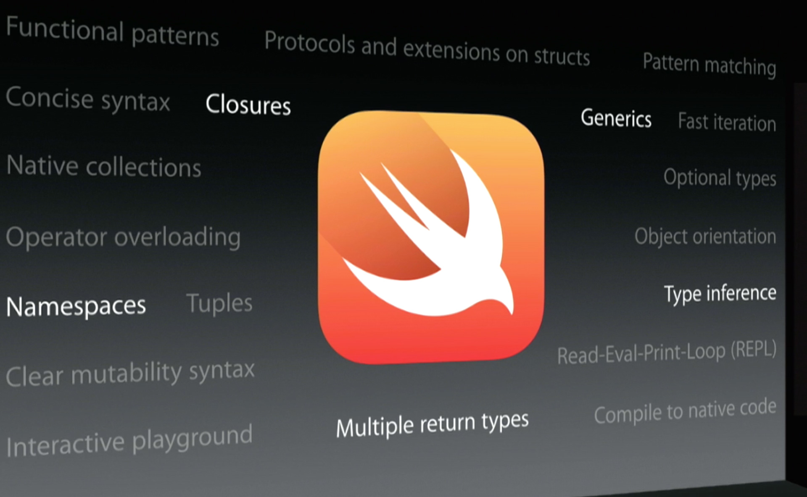
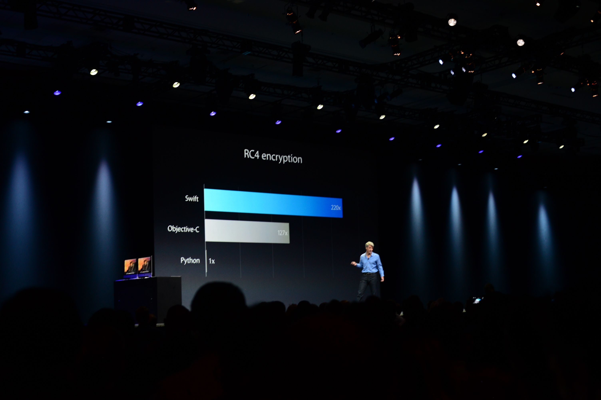
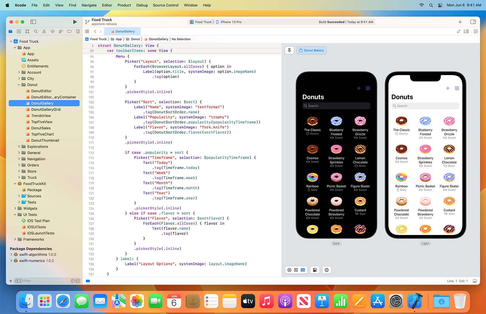

The powerful programming language that’s also easy to learn.
Swift is a powerful and intuitive programming language for all Apple platforms. It’s easy to get started using Swift, with a concise-yet-expressive syntax and modern features you’ll love. Swift code is safe by design and produces software that runs lightning‑fast.
Swift can open doors to the world of coding. In fact, it was designed to be anyone’s first programming language, whether you’re still in school or exploring new career paths. For educators, Apple created free curriculum to teach Swift both in and out of the classroom. First-time coders can download Swift Playgrounds — an app for iPad and Mac that makes getting started with Swift code interactive and fun.
Swift eliminates entire classes of unsafe code. Variables are always initialized before use, arrays and integers are checked for overflow, memory is automatically managed, and potential data races can be spotted at compile-time. Syntax is tuned to make it easy to define your intent — for example, simple three-character keywords define a variable ( var ) or constant ( let ). And Swift heavily leverages value types, especially for commonly used types like Arrays and Dictionaries. This means that when you make a copy of something with that type, you know it won’t be modified elsewhere.
From its earliest conception, Swift was built to be fast. Using the incredibly high-performance LLVM compiler technology, Swift code is transformed into optimized machine code that gets the most out of modern hardware. The syntax and standard library have also been tuned to make the most obvious way to write your code also perform the best whether it runs in the watch on your wrist or across a cluster of servers.
Swift is developed in the open at Swift.org, with source code, a bug tracker, forums, and regular development builds available for everyone. This broad community of developers, both inside Apple as well as hundreds of outside contributors, work together to make Swift even more amazing. There is an even broader range of blogs, podcasts, conferences, and meetups where developers in the community share their experiences of how best to use Swift.